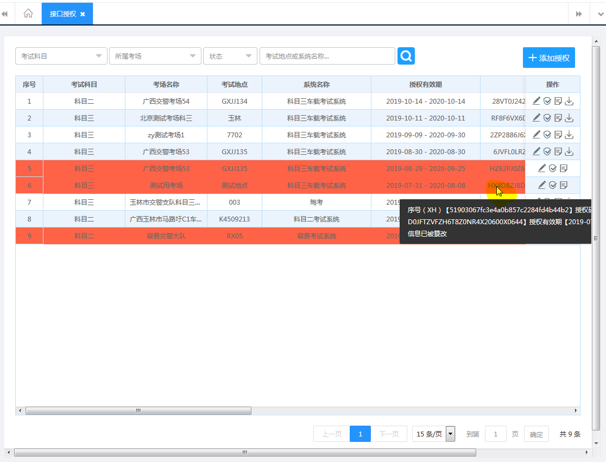

tips超出页面导致页面出现滚动条的问题，如下图
 TIPS位置规律上图设置的TIPS方向为向下，因此当鼠标移到TD上时，根据 "TIPS位置规律1"，由于TD只显示了一部分（隐藏部分已经超出了页面右边距），导致TIPS出现时，TIPS右边距也超出了页面右边距，从而致使页面现出滚动条。
解决方法
$("td").hover(
function () {
var tipWidth = ($(document).width() - $(this).outerWidth())/2 - 20;
idx = layer.tips("tips content", $(this), { tips: [2, "#333333"], time: 0, area: "auto", maxWidth: tipWidth });
},
function () {
layer.close(idx);
}
)